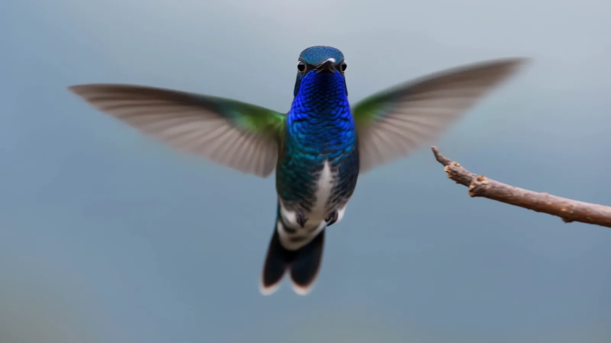
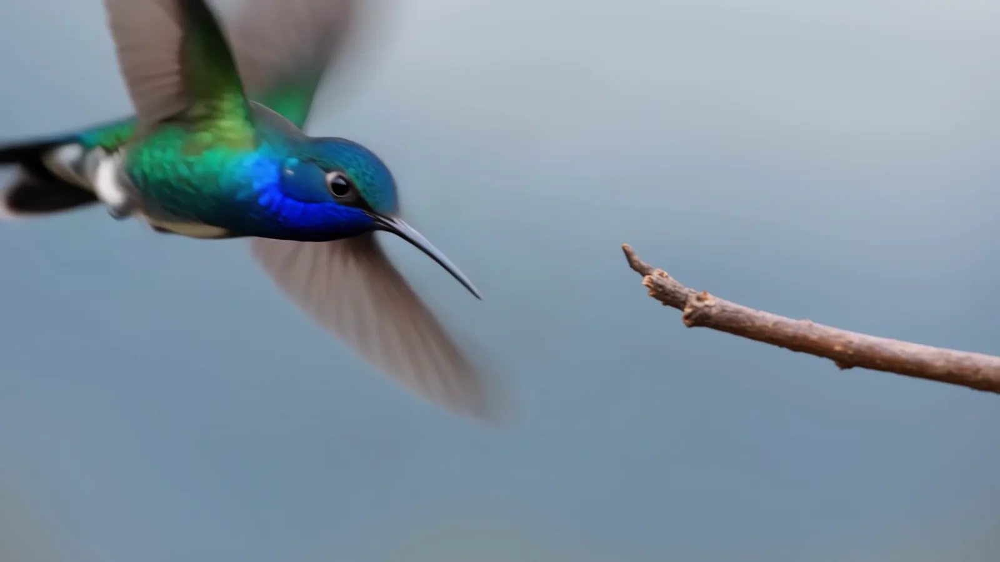
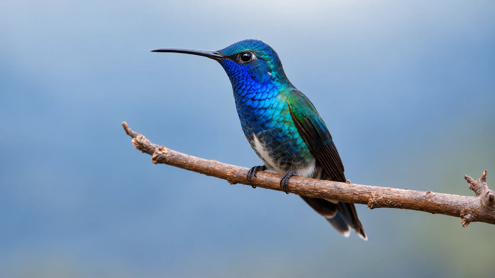

01 The Silence
In a world that never stops…
Between Wingbeats
An extraordinary life, hidden in plain sight.

02 The Arrival
…one creature has mastered the impossible.

03 The Dance
Forward. Backward. Suspended in time.
- Fig. 03.1 — Reverse flight The only birds capable of sustained backward flight.
- Fig. 03.2 — Wing path Wings moving in a remarkable figure-eight pattern.
- Fig. 03.3 — Control Precision hidden inside extraordinary speed.

04 The Stillness
Even the fastest wings find a moment of stillness.
The art of standing still.
05 The Revelation
A world between wingbeats.
The extraordinary is everywhere. If we know where to look.
A creature small enough to vanish in a glance crosses the air, turns back on itself, and settles on a twig as if nothing happened. The wonder was never hidden. It was only small, and quick, and waiting for someone to slow down.